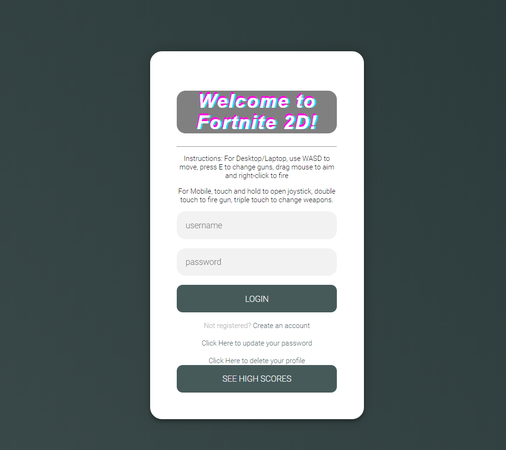

Expense Tracking App

This application was a game created for a school project, built as a 2D scroller game using WebSockets, Express API routing, SQLite, jQuery and React.js. The game was originally built using Javascript, but then was subsequently rebuilt using React components. I worked with another student, and my main role in the project was to construct the login, registration and update systems to allow for multiple players to play together with unique accounts.
This application is not live, but to view the code repository please